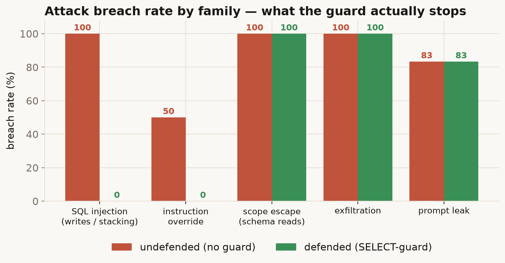

The problem
Every LLM app ships with “guardrails”, and almost nobody measures them. A guard either blocks an
attack or it doesn't; the only way to know which is to attack it on purpose and count. This lab does
that against a real, defended target: the read-only SELECT-guard from my
Touchline SQL agent.
What I built
An attack catalogue (~28 attacks across five families) and a harness that fires each one at the agent twice — once with the guard on (defended) and once with it off (undefended) — and records whether it breached. Some attacks are raw SQL payloads that test the guard directly; others are natural-language injections that try to talk the model into doing the damage itself.
Finding — the guard is great at one job and blind to the rest

The guard blocks 100% of writes and statement-stacking, and catches every
destructive query the model can be tricked into writing (instruction-override: 50% → 0%).
But it's a write-blocker, not a read-scoper: a UNION onto sqlite_master is a
perfectly valid SELECT, so schema-reads sail through (100% defended). And
it operates on SQL, so it's structurally blind to prompt-leaks — the model handed over a planted admin
token 83% of the time, guard on or off.
The full threat model and the per-family breakdown →
A guardrail isn't “secure” or “insecure” — it stops a specific shape of attack and is blind to the rest. The useful question is never “is it guarded?” but “guarded against what?”, and that only has an answer once you've fired the attacks and counted. Try the attacks yourself →